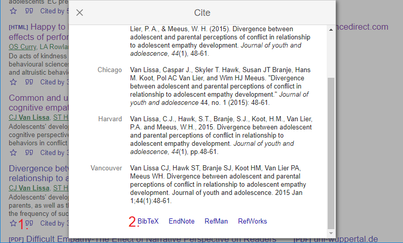

Comprehensive citation of literature, data, materials, methods, and
software is one of the hallmarks of open science. When using the
R-implementation of WORCS, you will most likely be writing your
manuscript in RMarkdown format. This means that you will
use Markdown citekeys to refer to references, and these
references will be stored in a separate text file known as a
.bib file.
To ease this process, we recommend following this procedure for citation:
- During writing, maintain a plain-text
.bibfile with the BibTeX references for all citations.- You can export a
.bibfile from most reference manager programs; the free, open-source reference manager Zotero is excellent and user-friendly, and highly interoperable with other commercial reference managers. Searching for “How to Integrate Zotero Citations with R Markdown” will yield tutorials for using Zotero with RMarkdown. - Alternatively, it is possible to make this file by hand, copy and
pasting each new reference below the previous one; e.g., Figure
@ref(fig:scholarbib) shows how to obtain a BibTeX reference from Google
Scholar; simply copy-paste each reference into the
.bibfile
- You can export a
- To cite a reference, use the
citekey- the first word in the BibTeX entry for that reference. Insert it in the RMarkdown file like so:@yourcitekey2020. For a parenthesized reference, use[@citekeyone2020; @citekeytwo2020]. For more options, see the RMarkdown cookbook. - To indicate a non-essential citation, mark it with a double
at-symbol:
@@nonessential2020. - When Knitting the document, adapt the
knitcommand in the YAML header.knit: worcs::cite_allrenders all citations, andknit: worcs::cite_essentialremoves all non-essential citations. - Optional: To be extremely thorough, you could make a “branch” of the
GitHub repository for the print version of the manuscript. Only in this
branch, you use the function
knit: worcs::cite_essential. The procedure is documented in this tutorial.

Exporting a BibTex reference from Google
Scholar